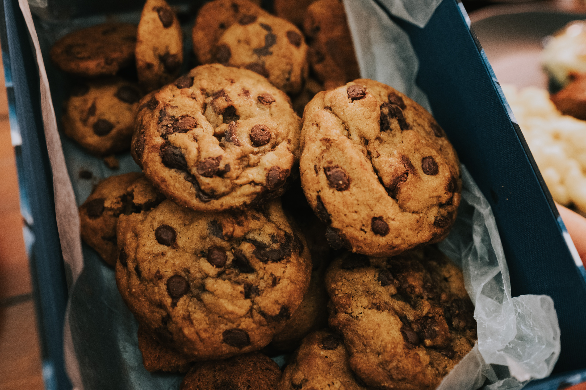

INGREDIENTES
125 g de manteiga sem sal em temperatura ambiente
3/4 xícara de açúcar
1/2 xícara de açúcar mascavo
1 ovo
1 e 3/4 de xícara de farinha de trigo
1 colher (chá) de fermento em pó
300 g de chocolate meio amargo picado
1 colher (chá) de essência de baunilha
** para fazer cookie de chocolate acrescentar 1/4 xícara de chocolate em pó
MODO DE PREPARO
Misture a manteiga, açúcar mascavo, açúcar, essência de baunilha (e chocolate em pó, se for fazer
cookies com base de chocolate).
Adicione o ovo batido aos poucos e misture bem.
Acrescente a farinha aos poucos e misture bem (pode ser na mão ou na batedeira planetária)
Por último, adicione o fermento e misture só para incorporá-lo à massa.
Depois da massa bem misturada, adicione o chocolate picado.
Forme bolinhas pequenas e asse em forno pré-aquecido, sobre papel manteiga, por aproximadamente 15 a 20
minutos (250° C).